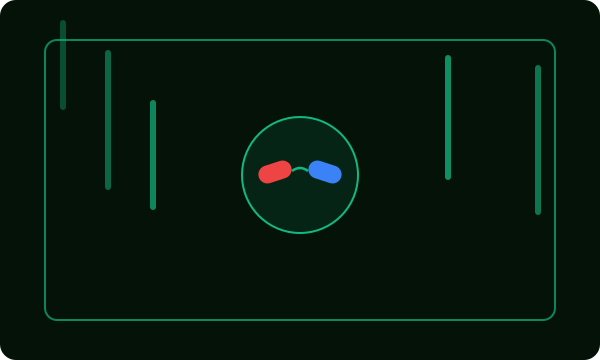
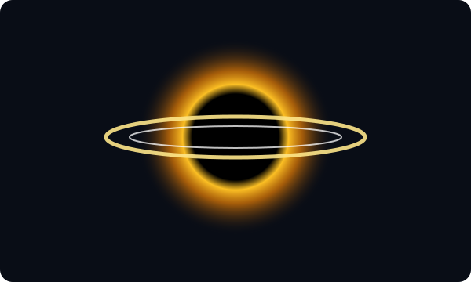

Матрица (1999)
Философский киберпанк-боевик о природе реальности и свободе выбора.
Авторский гид по научной фантастике
Исследуем легендарные фильмы о виртуальной реальности, дальнем космосе, архитектуре снов и искусственном интеллекте, которые изменили мировой кинематограф.
Листайте карточки кнопками ниже, чтобы переключать фильмы подборки и узнавать редкие факты со съёмочной площадки.

Хакер Нео узнаёт, что привычный мир — это сложная компьютерная симуляция, созданная машинами, и присоединяется к движению сопротивления ради освобождения человечества.
Нажмите «Подробнее» на любой карточке, чтобы открыть или скрыть разбор ключевой идеи фильма.
Философский киберпанк-боевик о природе реальности и свободе выбора.

Экспедиция за пределы нашей галактики в поисках нового дома для человечества.
Интеллектуальный триллер о внедрении идеи в подсознание через многоуровневые сны.
Авторы, чей визуальный стиль и работа со сценарием определили облик современной фантастики.
Мастер нелинейного повествования и практических спецэффектов, превративший теоретическую физику и архитектуру сновидений в масштабные блокбастеры.
Создатель гипнотических футуристических миров («Прибытие», «Бегущий по лезвию 2049», «Дюна»), в которых масштаб сочетается с глубокой человеческой драмой.
Соединили восточную хореографию, киберпанк-философию и передовую компьютерную графику, задав новый стандарт экшен-кинематографа.